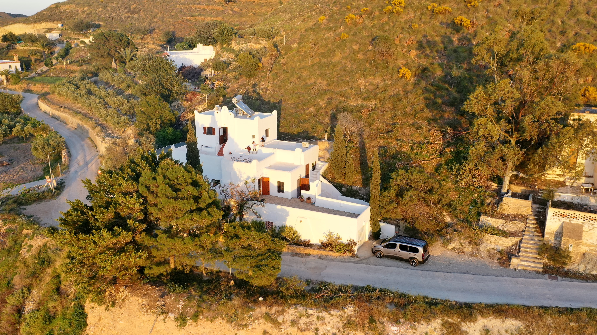
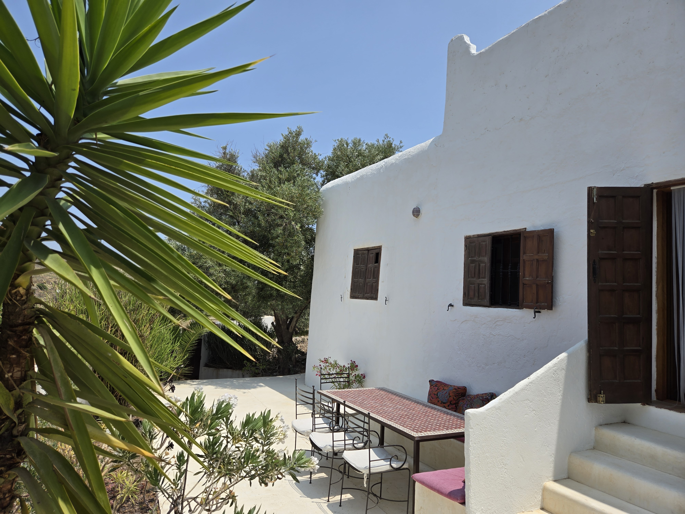
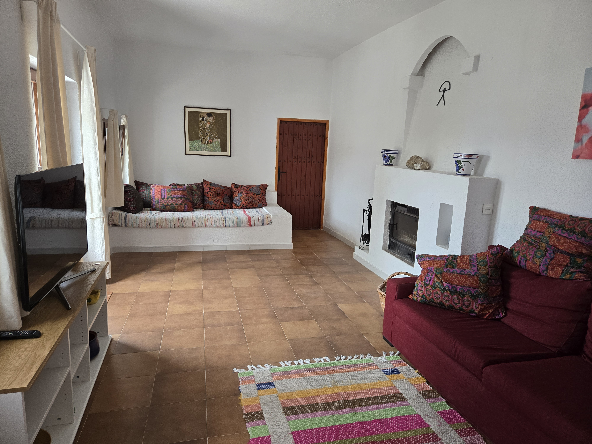
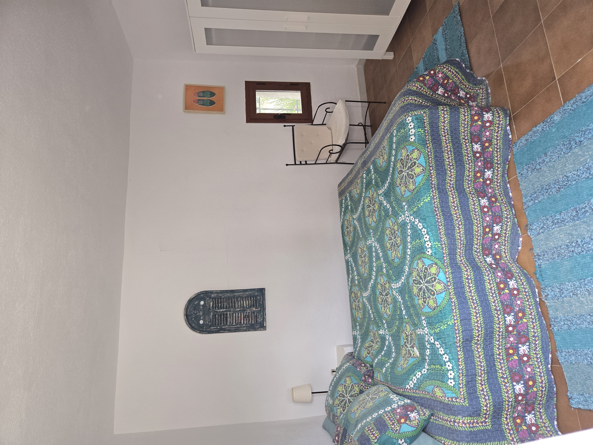
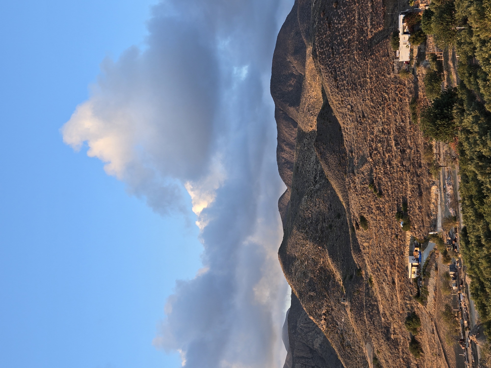

Willkommen in der Casa Valle de Luz. Genießen Sie entspannte Urlaubstage mit Familie und Freunden in einer großzügigen Villa mit mehreren Terrassen, viel Platz und einzigartigem Blick über Carboneras.
Die Villa bietet Platz für bis zu 10 Gäste und ist der ideale Ausgangspunkt für Strandtage, Naturerlebnisse und unvergessliche Sonnenuntergänge.





Die Casa Valle de Luz befindet sich in Carboneras an der Costa de Almería. In unmittelbarer Nähe erwarten Sie traumhafte Strände, kristallklares Wasser und der beeindruckende Naturpark Cabo de Gata.
Die Casa Valle de Luz kann bequem und sicher über Airbnb gebucht werden.
Auf Airbnb buchen